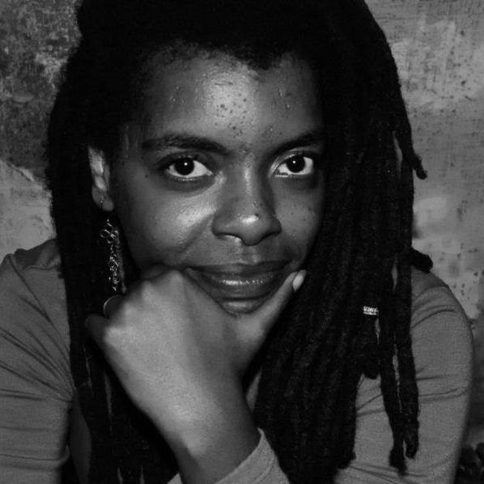
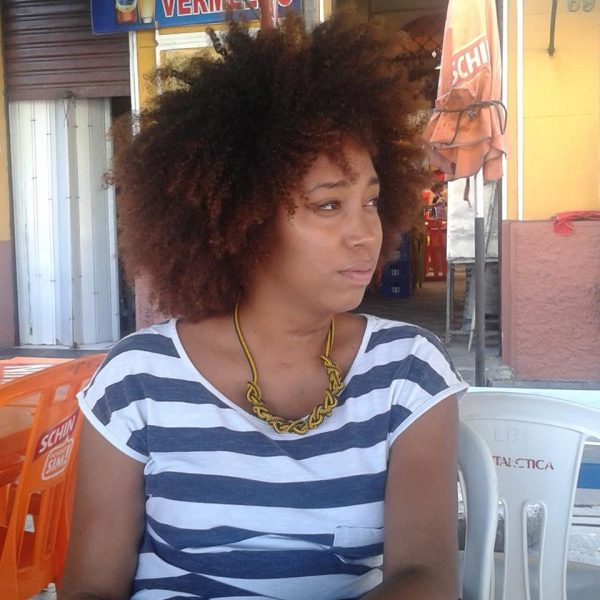

Funções / Programação e curadoria
As informações de cada perfil são de responsabilidade das profissionais.
Você quer conhecer profissionais de quais estados?
Marcar/Desmarcar todos
CARREGANDO ...
 Amanda Duarte (AL)
Amanda Duarte (AL)
Amanda Duarte
Maceió (AL)
amandad.mov@gmail.com
Comunicadora social com habilitação em Jornalismo, graduada pela Universidade Federal de Alagoas. Começou a se aproximar do Cinema e do Audiovisual em 2012 e, desde então, tem atuado nas áreas de produção, difusão e formação. É feminista, idealista social e militante cultural.
http://amandaduarte.jor.br
Outras atividades de Amanda Duarte
Assistência de Produção
|
Direção |
Exibição
|
Oficinas e cursos livres |
Roteiro
Amostra de vídeo
 Amanda Lopes (SP)
Amanda Lopes (SP)
Amanda Lopes
34 anos | São Paulo (SP)
amanda_lopes0@hotmail.com
Formada em Administração de Empresas e professora de matemática. Atuei por 10 anos na área de Recursos Humanos. Graduanda do último ano em Comunicação Social com ênfase em Cinema. Persistente, bastante curiosa e proativa. Me sinto uma eterna aluna. Crio histórias há 20 anos, porém somente nos últimos 4 anos encarei o cinema e pude participar de mais de 25 curtas metragens. FIES, zero recursos, muita fé e alguns amigos, arrisquei nos meus projetos próprios. Empreendedora atualmente desenvolvo a plataforma Mulheres Audiovisual voltada para distribuição de filmes feitos por mulher e vagas direcionadas a esse público.
http://amandalopesfilmes.wixsite.com/portfolio
Outras atividades de Amanda Lopes
Assistência de Direção |
Captação de Recursos |
Coordenação de Projeto |
Direção |
Edição |
Exibição |
Oficinas e cursos livres
|
Produção |
Roteiro
Amostra de vídeo
 Amanda Ramos (PE)
Amanda Ramos (PE)
Amanda Ramos
29 anos | Olinda (PE)
aamandaramos@gmail.com
Amanda Ramos é cineclubista, curadora e produtora cultural independente com experiência em festivais e mostras de cinema; Bacharelanda em Ciências Sociais (UFRPE) e integrante do Quebrando Vidraças, coletivo de cinema e gênero. Ministra oficinas de formação de cineclubes e palestras relacionadas ao tema em escolas, entidades sociais e municípios de Pernambuco.
Outras atividades de Amanda Ramos
Cineclubismo | Produção
 Íldima (PE)
Íldima (PE)
Íldima
35 anos | Recife (PE)
ildima@gmail.com
Pós graduada em Estudos Cinematográficos pela Unicap (PE), Íldima iniciou suas pesquisas sobre linguagem audiovisual ainda no processo de graduação, na Uneb (BA), tendo publicado a tese “Cinema, indústria e história: três momentos do cangaço no cinema brasileiro”, em 2004. Durante 3 anos realizou reflexões cinematográficas em seu blog “Embriaguez da Rapariga”. Em 2016, iniciou seu estudo sobre temporalidade e imagem com o primeiro trabalho titulado “O peso da câmera lenta”. Neste mesmo ano, formou o coletivo “Alastrado produções artísticas” no qual atual como diretora de arte, produtora e assistente de fotografia. Concilia pesquisa sobre a natureza da imagem e produção audiovisual.
https://www.facebook.com/alastrado/
Outras atividades de Íldima
Assistência de direção |
Cineclubismo |
Coordenação de projeto |
Crítica |
Direção de arte |
Oficinas e cursos livres |
Pesquisa e desenvolvimento |
Produção |
Roteiro
Iris Regina (PE)
Iris Regina
31 anos | Olinda (PE)
irisregin@gmail.com
Sou nascida no interior de São Paulo onde fiz faculdade de Artes Visuais, mas estou em Pernambuco desde o ano de 2012, onde fiz algumas especializações na área de designer gráfico e hoje dou aula de educação popular na área. Aqui me apaixonei pelo cinema e logo comecei com o cineclubismo e até hoje faço parte do Cineclube Bamako com foco no cinema africano e diáspora Cursos de Roteiro com Marcelo Paes de Carvalho, Laboratório Audiovisual com Pedro Severien, alguns cursos de captação e fotografia, áudio e produção. Fiz curadoria e juri em alguns festivais do estado como o Festival de Cinema de Triunfo, Recifest, Festicine e a I Semana de Comunicação Popular de Recife. Trabalhei na produção da mostra o CRUA (Cinema Rural Andarilho) que aconteceu em algumas cidades do interior de Pernambuco e Paraíba, também na mostra Olhar do Alto no Festival Olinda Coco Zumbi. Integro a produtora Studio Ru@ do CCJ-Recife (Centro de Comunicação e Juventude).
Outras atividades de Iris Regina
Assistência de Direção |
Assistência de Fotografia |
Cineclubismo |
Continuidade |
Design gráfico |
Direção |
Pesquisa e desenvolvimento |
Roteiro
Amostra de vídeo
 Kênia Freitas (DF)
Kênia Freitas (DF)
Kênia Freitas
32 anos | Brasília (DF)
kenialice@gmail.com
Pós-doutoranda do programa de Mestrado da Universidade Católica de Brasília. Doutora em Comunicação e Cultura pela UFRJ. Formada em Comunicação Social/Jornalismo, na Ufes. Possui pesquisas em andamento no campo do documentário, das novas tecnologias e do movimento Afrofuturista. Realizou a Curadoria da Mostra Afrofuturismo: cinema e musica em uma diaspora intergalatica, realizada em 2015, no Caixa Belas Artes/SP. A oficina O Afrofuturismo no cinema, durante a I Mostra de Cinema Negro da Universidade Federal do Espírito Santo, em 2016. E a palestra “Afrofuturismo: viagens entre Brasil e África”, no Centro de Pesquisa e Formação do SESC São Paulo, em 2016, durante o festival Afreaka.
http://mostraafrofuturismo.com.br/
Outras atividades de Kênia Freitas
Coordenação de Projeto |
Crítica |
Ensino superior |
Oficinas e cursos livres |
Produção
 Monique Rodrigues (RJ)
Monique Rodrigues (RJ)
Monique Rodrigues
Rio de Janeiro (RJ)
monique010982@gmail.com
Sou formada em Cinema com especializações em roteiro e pesquisa, tendo experiência em festivais, mostras, curta metragens e produção de conteúdo para web.
Outras atividades de Monique Rodrigues
Cineclubismo |
Coordenação de Projeto |
Crítica |
Direção |
Direção de Arte |
Pesquisa e desenvolvimento |
Produção |
Roteiro
Amostra de vídeo
 Priscila Oliveira (SP)
Priscila Oliveira (SP)
Priscila Oliveira
28 anos | Valinhos (SP)
priscifch@gmail.com
Sou formada em Ciências Sociais e Midialogia, pesquiso direção de criança para cinema no curso Mestrado em Artes da Cena. Minha formação e experiências estão voltadas para roteiro e direção, mas gosto de ampliar meus conhecimentos teóricos e práticos em outras áreas do audiovisual. Também tenho interesse em trabalhos que envolvam o negro e a mulher no cinema (na frente e atrás da câmera), principalmente em relação à construção de personagens.
https://www.facebook.com/ameiavista
Outras atividades de Priscila Oliveira
Assistência de Direção |
Direção |
Ensino superior |
Figurino |
Fotografia Still |
Gerência de Mídia |
Oficinas e cursos livres |
Pesquisa e desenvolvimento |
Preparação de Elenco |
Produção |
Roteiro
Amostra de vídeo
 Quézia Lopes (RJ)
Quézia Lopes (RJ)
Quézia Lopes
29 anos | Niterói (RJ)
queziamaria@yahoo.com.br
Bacharela em Cinema e Audiovisual pela Universidade Federal Fluminense (UFF), com experiência como diretora, roteirista, produtora, editora e assistente de direção e de produção, no cinema e audiovisual independentes.
https://www.facebook.com/queziamarialopes
Outras atividades de Quézia Lopes
Assistência de Direção |
Cineclubismo |
Coordenação de Projeto |
Crítica |
Direção |
Edição |
Pesquisa e desenvolvimento |
Produção |
Roteiro
Amostra de vídeo
 Sassá Souza (SC)
Sassá Souza (SC)
Sassá Souza
Florianópolis (SC)
sa.souzasss@gmail.com
Ativista Cineclubista Negra, fez parte do Cineclube Mate com Angu de onde saiu para fundar com outras feminista da Baixada Fluminense do RJ o Facção Feminista Cineclube. Antes disso lutou pela Pedagogia Libertária e implementação da Lei 10639/03 na cidade de Pelotas, no sul do RS junto ao Coletivo Negada, onde trabalhava com Educação Escolar Quilombola e Desenvolvimento Étnico Racial. Atualmente mora em Florianópolis -SC trabalhando na Secretaria de Ações Afirmativas e Diversidade da Universidade Federal de Santa Catarina e ativa o CineClube Ekô.
Outras atividades de Sassá Souza
Cineclubismo |
Edição |
Gerência de Mídia |
Produção |
Roteiro
Amostra de vídeo
Thamires Vieira (BA)
Thamires Vieira
23 anos | Cachoeira (BA)
thamiresvieirafjl@gmail.com
Thamires Vieira é realizadora audiovisual; membro do coletivo TELA PRETA, movimento de cinema negro, graduanda em Cinema pela UFRB, membro do Cineclube Mario Gusmão.